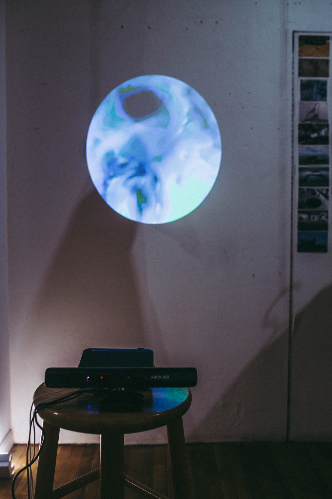

Vanish Extra
January 25–27, 2019
I’m excited to be showing new work in Vanish Extra, an exhibition by members of the fourth semester of Crit, at Assembly Room. The gallery is located at 191 Henry Street, and there is an opening reception on Friday, January 25 6:00 – 9:00 PM.
Caldera Residency and Open Studios
January 5–28, 2019
I feel honored to have been awarded a residency at Caldera, a beautiful arts organization in the Cascade Mountains of Central Oregon, among seven other writers and artists this January. Over the past two weeks here, I have mainly focused on developing climate model-related software and writing, which will guide my practice in 2019. I have also finished a new project, Exactly Where You Had Fallen, which will debut in NYC the same weekend as Open Studios. Oregonians please come see me at Caldera Open Studios this Saturday, January 26 from 12:30-3:30 PM! It’s a beautiful drive.

Youth workshop at the Sanctuary for Independent Media
July 18, 2018
I'm so happy to have been invited to give a workshop as part of the Sanctuary for Independent Media's youth empowerment program, Uptown Summer! The five-week program brought eight youth employees together to investigate environmental justice issues in North Central Troy. Youth employees had the opportunity to work with mentors and experts from diverse fields and ultimately develop their own projects to drive change within their community.
My workshop, the World in Numbers: Storytelling With Climate and Environmental Data, centered around a hands-on exercise where participants were challenged to develop a research question related to environmental injustice in Troy and propose a storytelling or campaign approach informed by data. Participants learned how to search for and perform basic analysis on publicly available data, as well as how to collect their own data through polling or environmental monitoring.
The youth employees came up with amazing ideas, and two of the projects were carried out over the course of the summer! I'm overjoyed to share a few of their projects below:
- Felicia and Najayah proposed polling local fishers on their awareness of river quality and whether they eat the fish they catch. For her final project, Felicia produced an informative and immersive radio story on contaminated fish in the Hudson. Check out her project here.
- Nicolena and Donovan presented data from riverkeeper.org as evidence that the Hudson river is more polluted in Troy than downstream in Albany and even parts of the East River in New York City. They proposed building a notification system into social media that would alert nearby users when river quality is higher or lower than usual.
- Angelo distributed a survery to residents of Troy to collect data on negligent landlords and produced a four-part radio story on the issue. Check out the story here.
Many thanks to Ellie Irons and Branda Miller for inviting me and to Durasia Anderson for participating as a workshop mentor. I'm honored to have been able to help out with such an amazing program, and beyond impressed by the work produced by these talented youths and program volunteers.
Interview in Burning Worlds
February 22, 2018
I had the pleasure of being interviewed by Amy Brady, the brilliant senior editor of the Chicago Review of Books, for her monthly column Burning Worlds: Climate Change in Art and Literature. Read the full interview here.
Excerpt
Amy: What strikes me most about your work is that you are always exploring the relationship between the human and the natural world. What are the challenges of this relationship, and why do we have such a hard time figuring out how to have a healthy, mutually beneficial relationship with the natural world?
Andres: Humans have always had an intimate connection to the climate. Twenty thousand years ago, North America was covered in a massive ice sheet. The first agrarian societies emerged only after the ice sheet melted and sea levels stabilized. Humans basically found their niche in a stable, de-glaciated climate. To this day, we remain heavily reliant on this climate, but that carefully balanced relationship has largely been overshadowed by capital and by the effects of globalism. So, one of the things I'm really worried about with climate change is not only the effects it can have on sea levels and global inequality but its effects on all culture. So much historically has been based on our relationship to Earth. That’s something we often forget in our globalized world.
.Zip Exhibition
February 3, 2018
.Zip is an exhibition featuring work by a diverse set of young artists and designers curated by Allegra Venturi and Chloe Karayiannis. I was delighted to show new work developed with help from John Filmanowicz. See all the photos here.

Business as Usual: 1967-2067. Edition 1
Strategies For Slow Violence
June 1, 2017
I was an invited speaker at the Art and Science of Rapid Climate Change, an event hosted by Brown University at the Whitney Museum on June 1, 2017. My talk, Strategies For Slow Violence, is accessible as a recording and an adapted PDF. Click here to download the PDF or contact me for an audio recording.